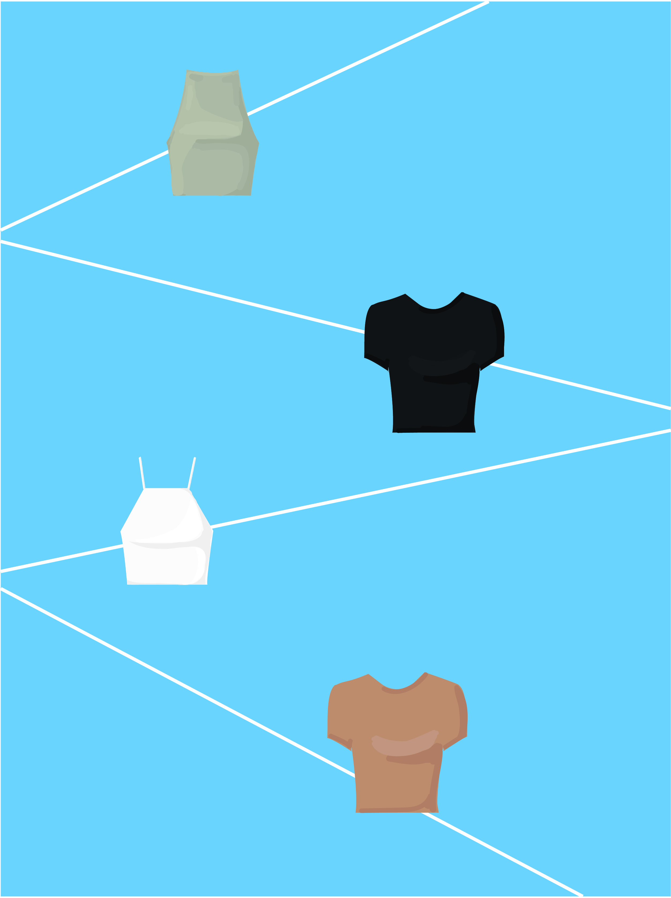

There's always a way to a rock a good crop top. Either on a casual beach day or even a formal event, this piece can be worn up or down. No need to be modest, show some skin! It'll help with the sweltering summer heat!

Ever have one of those days where you compose a bomb-ass, masterpiece of an outfit, but end up paying for it because you're seemingly incapable of comprehending what weather is? Don't be that friend complaining about always being overdressed or underdressed. No more begging to a borrow a sweater. No more embarrassing, sweaty pit stains. It's time to be practical, but we can still look cute and fashion-forward while we're at it!
Weather Dresser is the perfect stylist for you when it comes to be stylish, clean, and comfortable! It's intuitive, smart fashion.